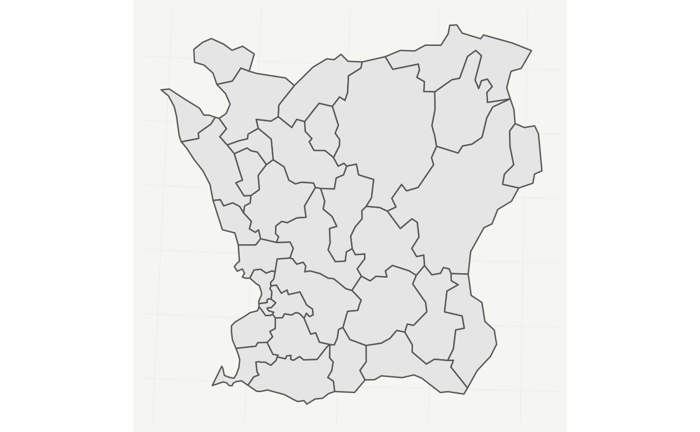

Combine swemaps2 with data from Kolada
Source:vignettes/articles/combine-with-kolada.Rmd
combine-with-kolada.RmdKolada
Kolada is a data cooperation between Swedish municipalities and regions. Through their website you can find a rich variety of different statistics. Many of these come from Statistics Sweden (SCB) and some come from the regions themselves. To query this data you can use the excellent package rKolada.
Below we have a municipality map of Skåne that we want to fill with data from Kolada.
library(tidyverse)
library(swemaps2)
municipality %>%
filter(ln_namn == "Skåne") %>%
ggplot() +
geom_sf() +
theme_swemap2()
rKolada is a great package that is easy to use. Below we pull data from Kolada on how many housing projects that have been granted building approval.
library(rKolada)
kpis <- get_kpi()
kpi_bygglov <- kpi_search(kpis, c("bostäder som beviljats bygglov"), column = "description")
kpi_bygglov_id <- kpi_extract_ids(kpi_bygglov)
municipalities <- get_municipality() %>%
municipality_extract_ids()
bygg_data <- get_values(
kpi = kpi_bygglov_id,
municipality = municipalities
)We can join the data by municipality_id and filter out one particular year:
skane_bygglov <- left_join(
municipality, bygg_data, by = c("kn_kod" = "municipality_id")
) %>%
filter(year == 2019 & ln_namn == "Skåne") Next, we visualize the data using geom_sf(), we also use geom_label_repel from the package ggrepel to add some labels for municipalities.
library(ggrepel)
ggplot(skane_bygglov, aes(fill = value)) +
geom_sf() +
theme_swemap2() +
scale_fill_viridis_c(option = "magma")+
labs(
title = "Antal bostäder som beviljat bygglov",
subtitle = "Antal bostäder som beviljats bygglov under två senast åren (T och T-1),\navser endast permanentboende, antal/1000 inv.",
caption = "Source: SKR and SCB, through Kolada",
fill = "Antal\nbygglov"
) +
geom_label_repel(
data = head(skane_bygglov),
aes(label = kn_namn, geometry = geometry),
stat = "sf_coordinates",
min.segment.length = 0,
color = "darkgrey"
)